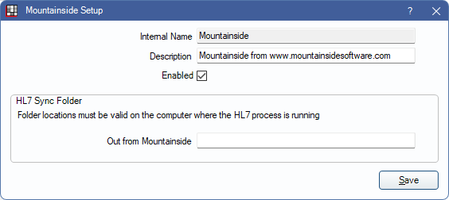

Mountainside Bridge
In the Main Menu, click Setup, Program Links. Double-click Mountainside from www.mountainsidesoftware.com.
Mountainside software is a medical practice management software.
Website: http://mountainsidesoftware.com/. Open Dental can provide dental capabilities for Mountainside customers.
To enable the bridge:
- Check the Enabled box.
- Enter the Out From Mountainside HL7 path.Note: The path is relative to the server computer, not the workstation you are on.
- Install the OpenDentalHL7 service on the server.
Technical Details
Any patients that are added or changed in Mountainside are automatically synced in Open Dental. Users should make changes to demographics in Mountainside rather than in Open Dental, because their changes might otherwise be overwritten later by the sync process.
There must be a primary key used to uniquely identify patients in both systems. Because Open Dental users do not have any control over the PatNum, the ChartNumber is instead used. As patients are added or changed in Mountainside, Open Dental attempts to fill in the ChartNumber field of existing patients to match the internal patient ID from Mountainside. Once the ChartNumber field has been set in OD, it allows straightforward future synchronization.